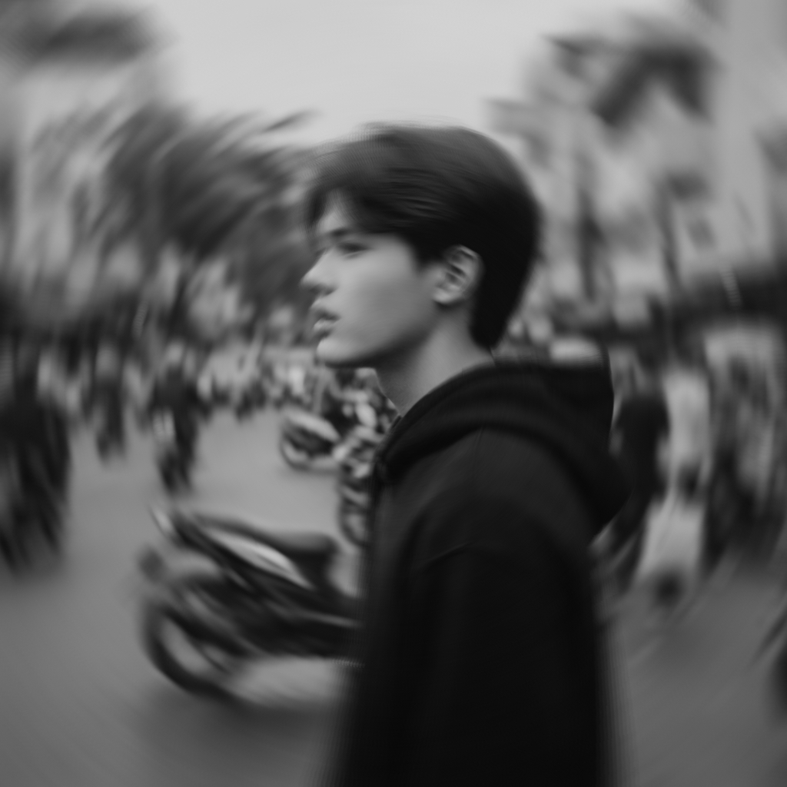

Developer of
Social Engineering
Halo! Saya Marchell Kevandra. Seorang kreator multi-disiplin yang menggabungkan logika pemrograman dan membuat musik untuk menciptakan pengalaman digital yang unik. Dengan latar belakang di bidang pengembangan web, desain UI/UX, dan produksi musik, saya bersemangat untuk mengeksplorasi batasan kreativitas melalui teknologi. Di luar dunia digital.
Tailwind CSS
JavaScript
React.js
UI/UX Design
Music Production
Featured Projects
The Mixstation
Platform produksi musik online dengan fitur kolaborasi real-time, integrasi plugin virtual, dan komunitas kreatif untuk berbagi karya.
FL Studio
Gaming Stats Dashboard
Halaman statistik pemain dengan integrasi banner visual dan sistem pencapaian (achievement) real-time.
UI Design / Frontend